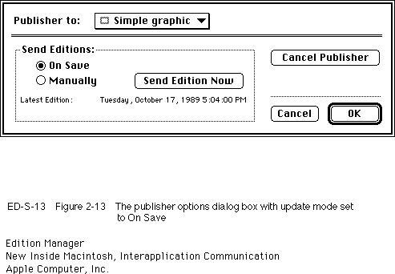
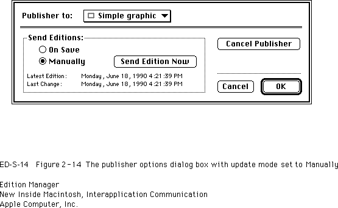
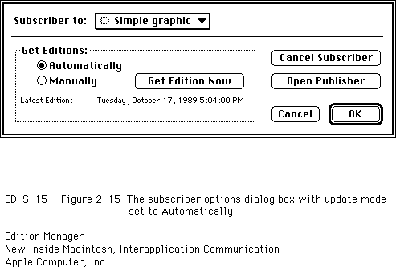
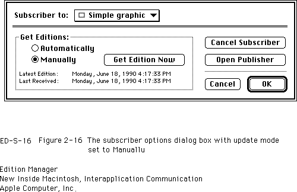

Using Publisher and Subscriber Options
You can allow users to set several special options associated with publishers and subscribers. To set these preferences, users change settings in two dialog boxes provided by the Edition Manager: publisher options and subscriber options. To make these dialog boxes available to the user, provide a command in the Edit menu that toggles between Publisher Options (when the user has selected a publisher within a document) and Subscriber Options (when a user has selected a subscriber within a document).When a user chooses one of these menu commands, you need to display the appropriate dialog box. Use the
SectionOptionsDialogfunction to display the publisher options or subscriber options dialog box on the user's screen.err := SectionOptionsDialog(reply);Each dialog box contains information regarding the section and its edition. Figure 2-13 shows the publisher options dialog box with the update mode set to On Save.Figure 2-13 The publisher options dialog box with update mode set to On Save

Figure 2-14 shows the publisher options dialog box with the update mode set to Manually.
Figure 2-14 The publisher options dialog box with update mode set to Manually

As a shortcut for the user, you should display the publisher options dialog box when the user double-clicks a publisher section in a document.
Figure 2-15 shows the subscriber options dialog box with the update mode set to Automatically.
Figure 2-15 The subscriber options dialog box with update mode set to Automatically

Figure 2-16 shows the subscriber options dialog box with the update mode set to Manually.
Figure 2-16 The subscriber options dialog box with update mode set to Manually

As a shortcut for the user, you should display the subscriber options dialog box when the user double-clicks a subscriber section in a document.
You pass a section options reply record as a parameter to the
SectionOptionsDialogfunction.TYPE SectionOptionsReply = RECORD canceled: Boolean; {user clicked Cancel} changed: Boolean; {changed section record} sectionH: SectionHandle; {handle to the specified } { section record} action: ResType; {action codes} END;Set thesectionHparameter to the handle to the section record for the section the user selected.Upon return of the
SectionOptionsDialogfunction, thecanceledandchangedfields are set. If thecanceledfield is set toTRUE, the user clicked Cancel. Otherwise, this field is set toFALSE. If thechangedfield is set toTRUE, the section record is changed. For example, the user may have changed the update mode.The
SectionOptionsDialogfunction returns in theactionparameter the code for one of five user actions. The function dismisses the publisher and subscriber options dialog boxes after the user clicks a button.Listing 2-8 shows an example of how your application can respond to the action codes received from the section options reply record. You can use several different techniques for this purpose; this listing shows one technique.
- Action code is
'read'for a click of the Get Edition Now button.- Action code is
'writ'for a click of the Send Edition Now button.- Action code is
'goto'for a click of the Open Publisher button.- Action code is
'cncl'for a click of the Cancel Publisher or Cancel Subscriber button.- Action code is
' '($20202020) for a click of the OK button.Listing 2-8 Responding to action codes
PROCEDURE DoOptionsDialog(theSection: SectionHandle); VAR reply: SectionOptionsReply; theEditionInfo: EditionInfoRecord; action: ResType; sodErr, geiErr: OSErr; gpiErr, gpsErr: OSErr; BEGIN reply.sectionH := theSection; {display options dialog box} sodErr := SectionOptionsDialog(reply); {determine what the user did and handle appropriately} IF reply.canceled THEN {user selected the Cancel button} EXIT(DoOptionsDialog); IF reply.changed THEN {the section record has changed; make note of this} MySectionHasChanged(theSection); {if you customize, you may want to do some } { post-processing now} {get the action code} action := reply.action; IF (action = 'read') THEN BEGIN {user selected Get Edition Now button} DoReadEdition(theSection); EXIT(DoOptionsDialog); END; IF (action = 'writ') THEN BEGIN {user selected Send Edition Now button} DoWriteEdition(theSection); EXIT(DoOptionsDialog); END; IF (action = 'goto') THEN BEGIN {user selected Open Publisher button} geiErr := GetEditionInfo(theSection, theEditionInfo); IF geiErr <> noErr THEN MyErrHandler(geiErr);{handle error and exit} gpsErr := GotoPublisherSection(theEditionInfo.container); IF gpsErr <> noErr THEN MyErrHandler(gpsErr);{handle error and exit} EXIT(DoOptionsDialog); END; IF (action = 'cncl') THEN BEGIN {User selected Cancel Publisher or Cancel Subscriber } { button. Call the UnRegisterSection function and dispose } { of the section record and alias record.} EXIT(DoOptionsDialog); END; END;The following sections describe the features of the publisher and subscriber options dialog boxes.Publishing a New Edition While Saving or Manually
By default, your application should write publisher data to an edition each time the user saves the document and the contents of the publisher differ from the latest edition. In the publisher options dialog box, the user can choose to write new data to an edition each time the document is saved (by clicking On Save) or only upon the user's specific request (by clicking Manually).When the update mode is set to manual, a user must click the Send Edition Now button in the publisher options dialog box to write publisher data to an edition. When a user clicks this button, the section options reply record contains the action code
'writ'. In this case, you should write out the new edition. Writing to an edition manually is useful when a user tends to save a document numerous times while revising it.Each time the user saves the document, check the update mode of the publisher section. If the publisher section sends its data to an edition when the document is saved, check whether the publisher data has changed since it was last written to the edition. If so, write the publisher's data to the new edition.
In addition, you may also support a Stop All Editions menu command to provide a method for temporarily suspending all update activity. See "Introduction to Publishers, Subscribers, and Editions" beginning on page 2-4 for additional information.
Subscribing to an Edition Automatically or Manually
By default, your application should subscribe to an edition each time new edition data becomes available. In the subscriber options dialog box, the user can choose to read new data from an edition as the data is available (by clicking Automatically) or only upon the user's specific request (by clicking Manually).When the update mode is set to manual, the user must click the Get Edition Now button in the subscriber options dialog box to receive new editions. When a user clicks this button, the section options reply record contains the action code
'read'. In this case, you should read in the new edition. See "Opening an Edition Container to Read Data" beginning on page 2-41 for detailed information.When the update mode is set to automatic, your application receives a Section Read event each time a new edition becomes available. In response, you should read the new edition data beginning with the
OpenEditionfunction.Your application does not receive Section Read events for subscribers that receive new editions manually.
You may also support a Stop All Editions menu command to provide a method for temporarily suspending all update activity. See "Introduction to Publishers, Subscribers, and Editions" beginning on page 2-4 for additional information.
Canceling Sections Within Documents
The option of canceling publishers and subscribers is available to the user through the Cancel Publisher and Cancel Subscriber buttons in the corresponding options dialog boxes. When the user clicks one of these buttons, the action code of the section options reply record is'cncl'. See "Relocating an Edition" on page 2-60 for additional information on canceling a section.When a user cancels a section (either a publisher or subscriber) and then saves the document, or when a user closes an untitled document (which contains newly created sections) without saving it, you must unregister each corresponding section record and alias record using the
UnRegisterSectionfunction. In addition, you should also delete the section record and alias record using theDisposeHandleprocedure. See Inside Macintosh: Memory for additional information on theDisposeHandleprocedure.When a user cancels a publisher section and then saves the document, or when a user closes an untitled document (which contains newly created publishers) without saving it, you must also delete any corresponding edition containers (in addition to deleting section records and alias records).
Do not delete an edition container file, section record, or alias record until the user saves the document; the user may decide to undo changes before saving the document.
To locate the appropriate edition container to be deleted (before you use the
UnRegisterSectionfunction), use theGetEditionInfofunction.err := GetEditionInfo(sectionH, editionInfo);TheeditionInfoparameter is a record of data typeEditionInfoRecord.TYPE EditionInfoRecord = RECORD crDate: TimeStamp; {date edition container } { was created} mdDate: TimeStamp; {date of last change} fdCreator: OSType; {file creator} fdType: OSType; {file type} container: EditionContainerSpec;{the edition} END;TheGetEditionInfofunction returns the edition container as part of the edition information.The
crDatefield contains the creation date of the edition. ThemdDatefield contains the modification date of the edition.The
fdTypeand thefdCreatorfields are the type and creator of the edition file. Thecontainerfield includes a volume reference number, directory ID, filename, script, and part number for the edition.To remove the edition container, use the
DeleteEditionContainerFilefunction.err := DeleteEditionContainerFile(editionFile);Locating a Publisher Through a Subscriber
The user can locate a publisher from a subscriber within a document by clicking the Open Publisher button in the subscriber options dialog box. As a shortcut, Apple suggests that you also allow the user to locate a publisher by selecting a subscriber in a document and pressing Option-double-click.When the action code of the
SectionOptionsReplyrecord is'goto', use theGoToPublisherSectionfunction.err := GoToPublisherSection(container);TheGoToPublisherSectionfunction locates the correct document by resolving the alias in the edition, and it launches the document's application if necessary (the Edition Manager sends an Open Documents event). The Edition Manager then sends the publishing application a Section Scroll event. If the document containing the requested publisher is located on the same computer as its subscriber, the document opens and scrolls to the location of the publisher. If the document containing the requested publisher is located on a shared volume (using file sharing), the document opens and scrolls to the location of the publisher only if the user has privileges to open the document from the Finder.You need to provide the
GoToPublisherSectionfunction with the edition container. To accomplish this, use theGetEditionInfofunction. See the previous section, "Canceling Sections Within Documents," for information on theGetEditionInfofunction.